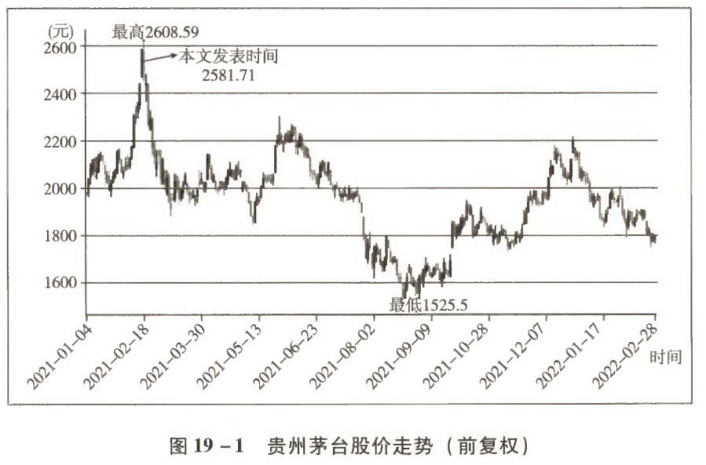

读史可以明智 ——对贵州茅台的全面回顾和展望
老唐实盘公开八年来，贵州茅台一直是第一大重仓股。2021 年初三次卖出近于清仓。与过往剖析茅台投资价值的文章不同，本文重点分析老唐如何在茅台上赚钱，收益从何而来，以及在可见的未来如何继续从茅台身上赚到钱。
一、清仓事实：三次减仓，只留 3% 观察仓
2021 年 1 月 8 日、2 月 8 日和 2 月 10 日，我在预定卖点将贵州茅台减仓至仅剩 3%。
| 减仓日期 | 对应市值卖点 |
|---|---|
| 2021-01-08 | 2.7 万亿元 |
| 2021-02-08 | 2.97 万亿元 |
| 2021-02-10 | 3.24 万亿元 |
| 加权平均 | 略低于 3 万亿元 |
剩下的这 3% 算是纪念性质的观察仓，不关心未来涨跌。
二、7 年 22 倍的故事
老唐实盘公开 7 年多，贵州茅台从 2014 年初的 1330 亿元市值，到卖出时近 3 万亿元市值，带来了丰厚的回报。可以说老唐的命运因茅台而改变。
对于茅台，对于所有的茅台人，我都心怀感恩。当然，对于推高市盈率的市场先生群体，我同样心怀感激。
2.1 起点与终点：两组估值数据
| 时点 | 市值 | 净利润基数 | 静态市盈率 | 动态市盈率 |
|---|---|---|---|---|
| 2014 年初（买入） | 约 1330 亿元 | 2013 年 151.4 亿元 / 2014 年 153.5 亿元 | 约 8.8 倍 | 约 8.7 倍 |
| 2021 年初（卖出） | 近 3 万亿元 | 2020 年约 460 亿元 / 2021 年约 540 亿元 | 约 65 倍 | 约 55 倍 |
1330 亿元是怎么算出来的：2014 年第一个交易日，茅台开盘价 127.99 元。当时总股本 10.3818 亿股，市值为 127.99 × 10.3818 ≈ 1329 亿元。
2.2 22 倍拆解：收益到底来自哪里
这个 7.11 年（以下简化表述，略称为 7 年）从 1330 亿元到近 3 万亿元的 22 倍故事，实际上由三部分构成：
| 序号 | 收益来源 | 计算过程 | 贡献倍数 | 性质 |
|---|---|---|---|---|
| ① | 茅台公司净利润的增长 | 540 ÷ 153.5 | ≈ 3.5 倍 | 研究的功劳 |
| ② | 市盈率从严重低估的 8.7 倍，回到无风险收益率对应的估值中枢 30 倍 | 30 ÷ 8.7 | ≈ 3.5 倍 | 研究的功劳 |
| ③ | 从估值中枢 30 倍到高估的 55 倍 | 55 ÷ 30 | ≈ 1.8 倍 | 市场先生的馈赠 |
最终结果：3.5 × 3.5 × 1.8 ≈ 22 倍（或以静态口径视为 3 × 3.4 × 2.2 ≈ 22）。
这是投资者首先应该搞清楚的事情：自己赚的钱来自哪里。
2.3 哪部分是能力，哪部分是运气
① + ② = 3.5 × 3.5 ≈ 12 倍，是投资者深度研究的功劳，包含两个层面：
- ① 对企业利润增长的研究；
- ② 对符合老唐估值法三大前提的企业，合理市盈率必然向无风险收益率靠拢的逻辑理解。
这 12 倍涨幅，属于按计算器的“夹头”（对价值投资者的戏称）有能力赚到，也应该赚到的钱。
后面的 1.8 倍，属于市场先生情绪的馈赠，是风落之财、意外之财（Windfall）。风落之财应归功于运气，以及这个“不适合价值投资”的 A 股市场。
它们三者的叠加，才带来了茅台 7 年 22 倍的神话。把运气当能力，是投资中最危险的自我欺骗。
三、读史可以明智
3.1 当下的市盈率高吗？答案很直接
鼠年最后一个交易日，茅台收盘价 2601 元，市值 32674 亿元。
| 计算口径 | 净利润基数 | 市盈率 |
|---|---|---|
| 静态（2020 年） | 约 460 亿元 | 约 71 倍 |
| 动态（2021 年） | 约 540 亿元 | 约 60 倍 |
这个市盈率高吗？老唐历来不喜欢含糊其词，答案简单粗暴：高了。
但高了就会跌吗？ 如果市盈率高了就会跌，市盈率低了就会涨，世上就不会有穷人了。投资确实很简单，但还真没简单到如此地步。
3.2 为什么要回顾历史
市场先生的情绪只能利用，无法预测，这是投资最重要的基本法则。
不过，无法预测不妨碍我们回顾历史，看看之前的一场超级大牛市里，市场先生曾经疯狂到什么程度，后来又是如何发展的。
历史不会简单重复，却会踏着相同的韵律走来。“读史可以明智”的意思就是回顾过去，可以帮我们更好地展望未来。
3.3 样本：2007 年的超级大牛市
2007 年，中国股市爆发有史以来最大规模的一次牛市。
牛市成因与背景：
- 股权分置改革释放制度性红利；
- 以基金为代表的金融资本第一次登台与产业资本博弈；
- 通胀持续飙升，经济过热，国内外流动性过剩；
- 其间央行十次提准、五次加息，甚至是美国次贷危机的逐渐升级，都没能抑制住 A 股疯狂上涨的步伐。
指数表现：
| 指数 | 2007 年涨幅 |
|---|---|
| 上证综指 | 94% |
| 沪深 300 指数 | 161.55% |
满大街是高唱“死了都不卖”的声音。截至目前，中国 A 股历史上，2007 年牛市依然可以用“前无古人、后无来者”八个字形容。
3.4 2006—2008 年茅台基础数据
在这段大牛市里，茅台的股价表现如何？先记录几个基本数据：
| 年份 | 净利润 | 同比增长 | 总股本 |
|---|---|---|---|
| 2006 年 | 15.4 亿元 | — | 9.438 亿股 |
| 2007 年 | 28.3 亿元 | +83% | 9.438 亿股 |
| 2008 年 | 38 亿元 | +34% | 9.438 亿股 |
说明：2006—2008 年，茅台总股本未发生变化，均为 9.438 亿股。
3.5 疯狂与崩塌：茅台两年的真实轨迹
2007 年（上涨 163.97%）：
| 项目 | 数值 |
|---|---|
| 开盘价 | 90.01 元 |
| 最低价 | 83.3 元 |
| 最高价 | 230.1 元 |
| 收盘价 | 230 元 |
| 全年涨幅 | +163.97% |
| 对应市值区间 | 786 亿 ~ 2172 亿元 |
| 静态市盈率区间 | 52 ~ 145 倍 |
| 动态市盈率区间 | 28 ~ 77 倍 |
2008 年（下跌 52.57%）：
| 项目 | 数值 |
|---|---|
| 开盘价 | 227 元 |
| 最高价 | 230.55 元 |
| 最低价 | 84.2 元 |
| 收盘价 | 108.7 元 |
| 全年跌幅 | -52.57% |
| 对应市值区间 | 2176 亿 ~ 795 亿元 |
| 静态市盈率区间 | 77 ~ 28 倍 |
| 动态市盈率区间 | 57 ~ 21 倍 |
以上均为未复权真实价格，下同。
四、知道自己能赚什么钱很重要
4.1 如果重演 2007 年，茅台能涨到哪里
让我们回看当下：春节前茅台收盘价 2601 元，总股本 12.56 亿股（125619.78 万股），对应市值 32674 亿元。
假如 2021—2022 年市场能够走出 2007 年那样的超级大牛市，也就是说，我们按照 2007 年茅台的估值上限“静态 145 倍或动态 77 倍”来揣摩市场先生，这意味着：
| 测算口径 | 计算过程 | 目标市值 |
|---|---|---|
| 动态 77 倍（2021 年利润） | 540 × 77 | ≈ 4.16 万亿元 |
| 静态 145 倍（2020 年利润） | 460 × 145 | = 6.67 万亿元 |
| 结果项 | 数值 |
|---|---|
| 对应股价 | 3300 ~ 5300 元 |
| 相对当前涨幅 | +27% ~ +104% |
4.2 可能吗？一切皆有可能
不就是市盈率从 71 倍升到 145 倍，为什么就不可能呢？股市里，市盈率几百上千的公司一大把，凭什么我们茅台就不能享受这待遇呢？
但是，朋友们，扪心自问，你敢赚这笔钱吗？我先坦白，我不敢。
别人如果赚到这 27%~104%，那是别人浑身是胆或智慧超群的应享回报。我只能表示“仰慕之心犹如滔滔江水连绵不绝，好似黄河决堤一发而不可收拾”。我绝对不会羡慕嫉妒恨，我保证。
因为我知道自己几斤几两。这就是能力圈的真正含义——不是知道什么能赚，而是知道什么自己赚不到。
五、老唐能赚到的两种钱
我可以赚到什么钱呢？两种钱。
5.1 第一种钱：没有超级牛市，回归 30 倍后买入
如果后面不是 2007 年那样“前无古人、后无来者”的超级大牛市，热潮过后，茅台可能会回到 30 倍合理市盈率以下。
| 假设情形 | 净利润 | 30 倍对应市值 |
|---|---|---|
| 2021 年（预估） | 540 亿元 | 16200 亿元 |
| 2022 年（再增长 25%） | 675 亿元 | 20250 亿元 |
| 2023 年（利润继续增长 25%） | 845 亿元 | 25350 亿元 |
| 千亿净利润时 | 1000 亿元 | 30000 亿元 |
我买入，继续获取茅台经营利润的确定性增长。这是以老唐的鼠胆，可以赚到的第一种钱。
5.2 第二种钱：真有超级牛市，等它后面的超级熊市
如果后面是 2007 年那样的超级大牛市，陪伴大牛市的不是还有 2008 年的静态 28 倍市盈率、动态 21 倍市盈率的诱人熊市吗？我等这个。
而且我不需要等 21 倍，我 30 倍就大方买入。拿人家的手短，吃人家的嘴软。当初老唐拿过吃过市场先生的馈赠，此时就不好太计较。
这是按计算器的“夹头”，能够坦然赚到的第二种钱。
六、完整归结：两条逻辑主线
6.1 逻辑一：经营利润增长是高确定性的
鉴于产品的供不应求，以及出厂价和一批价之间的巨大价差，即便考虑部分收藏和炒作的泡沫因素存在，茅台的经营利润增长依然可以说是高确定性的。
对于企业提出的“十四五”末（2025 年）利润翻番的目标，老唐比贵州省委省政府以及茅台管理层更乐观。我认为提前实现目标的可能性非常大，完全可能在 2024 年甚至 2023 年就实现茅台股份公司千亿元净利润。只要打破价格管制政策，提前实现的可能性相当大。
千亿净利润意味着什么（相比 2020 年约 460 亿元的基数，增长 117%）：
| 达成年份 | 折合年化增长率 |
|---|---|
| 2024 年过千亿 | 约 22% |
| 2023 年过千亿 | 可能达 30% |
6.2 逻辑二：当前估值不支持我继续持股
在静态市盈率 71 倍、动态市盈率 60 倍的今天，我的认识和能力不足以支持我继续持股。我只能等待两种机会。
机会一：未来不是超级大牛市
茅台伴随着经营利润的增长，市盈率逐步回落。我可能在某年净利润的 30 倍水平重新开始买入。
- 具体是哪年，我也不知道，经验性地认为三年之内机会很大；
- 我能获得的，是买入位置低于 3 万亿元卖出后的市值差，以及这期间资金的无风险收益率。
当然，这期间可能投入其他投资对象后亏损。但这个锅不应由卖出茅台的决策背——决策的对错要用决策当时的信息和逻辑来评判，而不是用后续无关事件的结果。
机会二：未来是超级大牛市
茅台虽然增长率不足 30%，却仍然在市场情绪的推动下达到 145 倍的静态市盈率高度，股价翻倍至 5000 元以上。所有坚守和买入茅台的人，赚得盆满钵满，嘲笑和打脸老唐的声音满网飞。
在这种超级大牛市的环境里：
- 老唐所有的持股可能都会陆续触碰卖点，甚至可能连指数基金也被迫清仓；
- 在别人死了都不卖的翻倍过程中，老唐可能只赚到 30% 甚至更少的肉渣渣；
- 逐步变成满仓债券基金甚至货币基金的状态，在一片嘲笑声中等待大牛市后必然伴随的大熊市。
收入是一连串事件，等待是其中重要的一环。
这种情况下，老唐或许连打新资格也丧失了，每天点开股票 App 的理由没有了，甚至可能连“唐书房”也被骂得不更新了。满市场都是“股神”。但凡看“唐书房”文章的，一律被耽误了赚钱，更新简直就是在坑人。那时的老唐，或许每天沉迷于阅读、运动、陪我家领导，也或许再跑出去搞几个月自驾游。
6.3 一个承诺
但是，如果真让我等到大牛之后的大熊，我承诺（请脑补茅台经销商庄严宣誓的场面）：
未来两年，市场会是超级大牛市还是超级大熊市？我不知道。 但基于对市场先生他老人家的信心，我相信他会赏我买入机会的，大概率就在三年内。
注意，这是纯拍脑袋，没逻辑的。为了拿到市场先生丰厚的奖金，我已准备好接受嘲笑和挖苦了，如同我持有的其他个股在下跌途中所遭受的待遇那样。
七、补充说明
完全没有想到，市场先生在随后半年不到的时间就给了我买入机会。
7.1 提前披露的买入计划与执行情况
老唐提前设定并在“唐书房”披露的买入计划：
| 股价触发点 | 计划仓位 | 实际执行 |
|---|---|---|
| 1810 元 | 加至 8% | ✅ 已触发 |
| 1685 元 | 加至 16% | ✅ 已触发 |
| 1560 元 | 加至 32% | ⚠️ 已触发但资金不足，仅买入 2%，仓位只加至 18% |
| 1320 元 | 补齐至个人单只持仓上限 40% | 未触发 |
最终前三个买入位置均被触发。唯一可惜的是跌至 1560 元的时候，老唐手中已经没钱。
7.2 最新持仓状态
截至 2022 年 2 月底，茅台以 19% 仓位占比（这期间股价涨幅相对领先造成的比例提升）位列老唐实盘第三大持仓。
